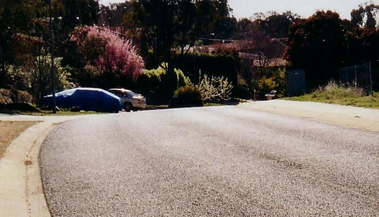
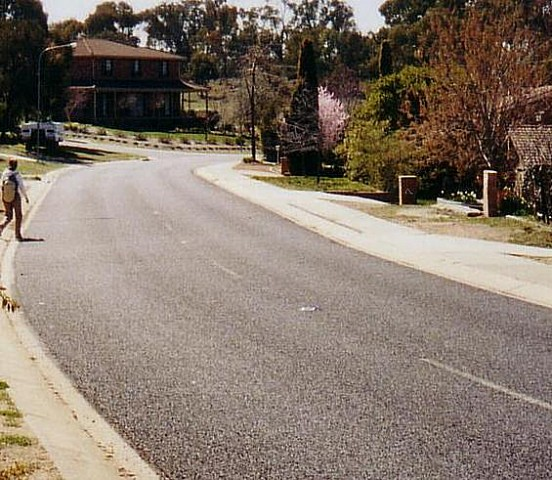
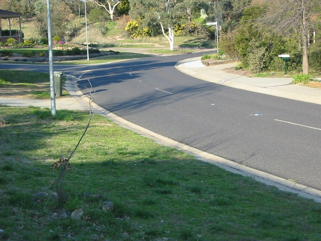
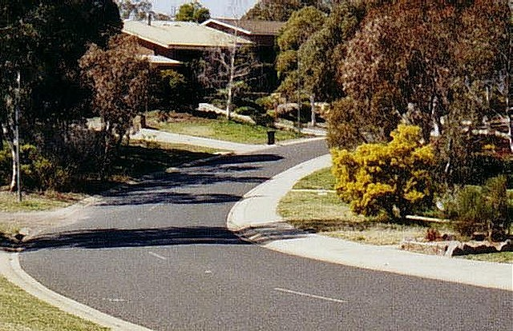
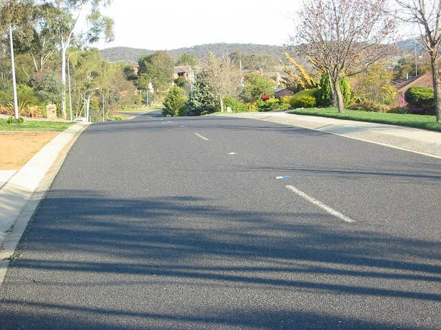
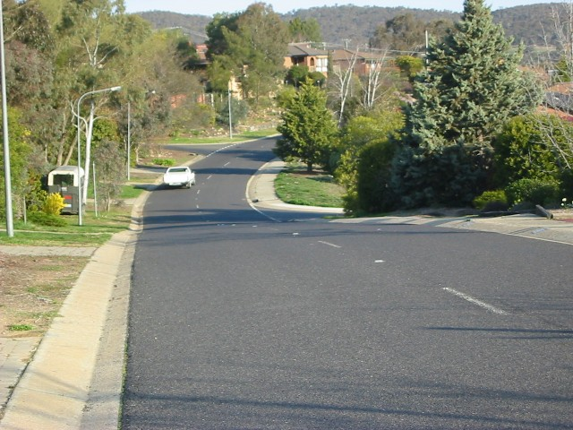
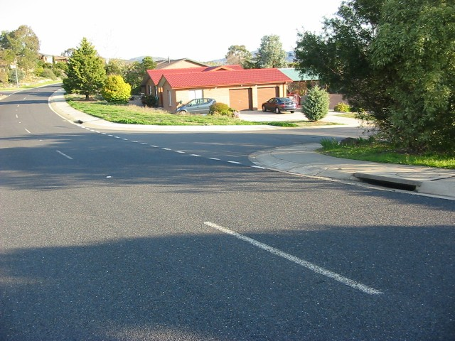

Numbers and arrows on the map represent the location and direction of where the photographs were taken. Click links above to view photo pages.
Macarthur Park - Jackie Howe Cresent
|| Contents || Coyne [01-06] | Jackie Howe [07-13] | Merriman [14-20] | Carson [21-27] || Home ||
Numbers and arrows on the map represent the location and direction of where
the photographs were taken. Click links above to view photo pages.
Return to racingcircuits.net's Photo Archive Main Index
|  |
| 07 - The next thing you come to is another flat-out right hander over another crest - this time with a bit of negative camber thrown in to make it a bit more exciting. |
|  |
| 08 - Had that house been there at the time the residents would have had a box seat overlooking one of the best parts of the circuit. |

09 - Going gently down

10 - It bottoms out just past the apex, and starts to rise again.

11 - But this time it straightens out over the crest

12 - Just in time to get on the brakes for the right turn...

13 - ...into Merriman Crescent...
| << PREVIOUS PAGE |
Photographs and Text ©Mark Taylor. Reproduced here with kind permission.